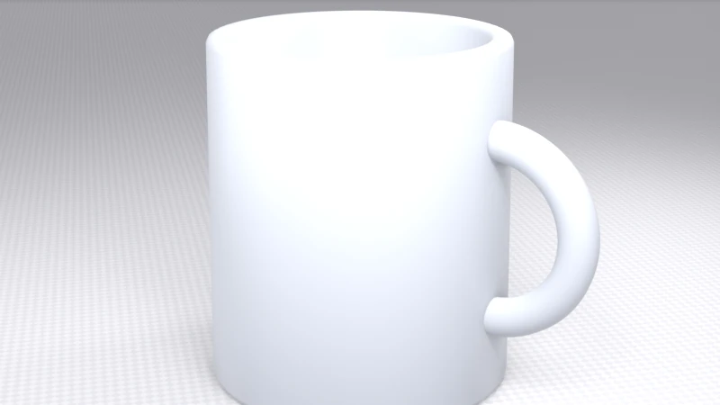
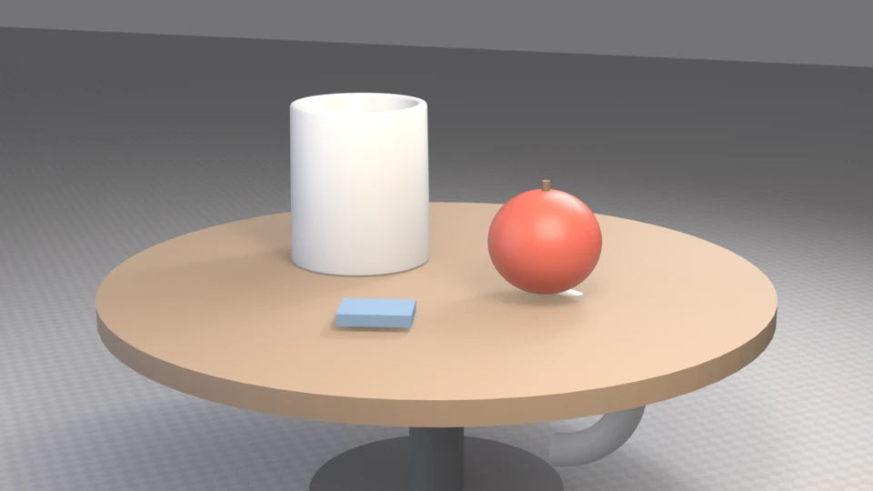
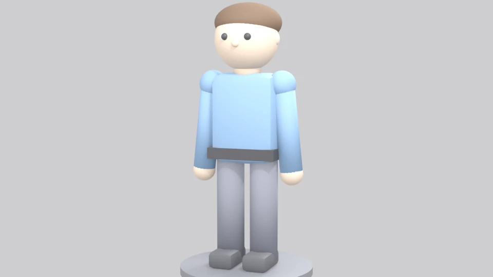
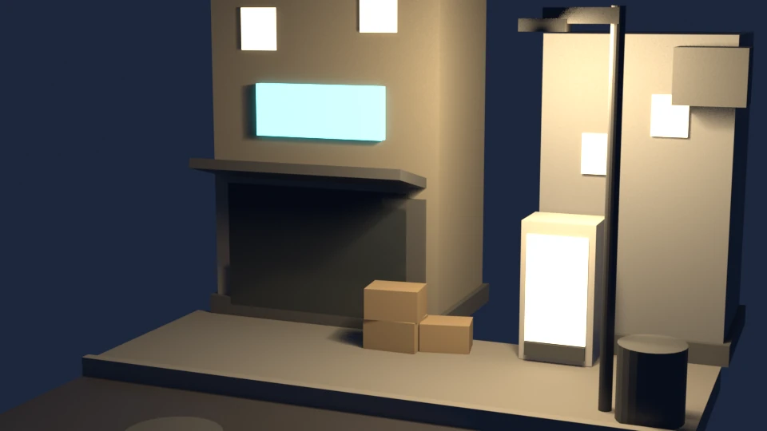
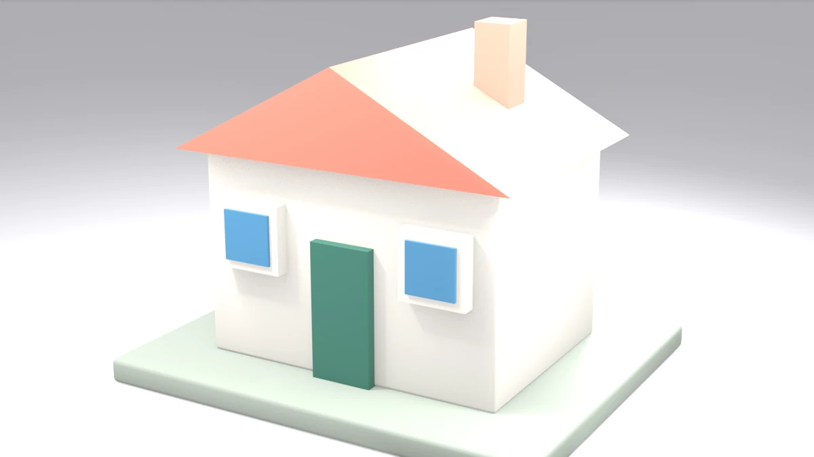

序章
卷首语
夫风生于地，起于青蘋之末。侵淫溪谷，盛怒于土囊之口。
—— 宋玉《风赋》
两千多年前，宋玉写尽了风的轨迹：它从大地生发，始于青萍叶尖的一丝微动，而后漫过山涧溪谷，最终在山口化作呼啸的狂风。世间万事的生发，大抵都是如此 —— 从微末处启程，于积累中成型，终成浩荡之势。
建模也是一样。
所谓建模，就是把你脑海中构想的画面，第一次真正 “握” 在手中的过程；而更珍贵的是，这是一个可以无限撤销、随时重来的世界，你尽可以大胆试错，从容打磨。
这本书，专为零基础的你而作。你不必擅长绘画，不必精通代码，也无需所谓的 “天赋”—— 只需要一台电脑、一只鼠标，和从此刻开始的一份耐心。初遇界面难免生疏，快捷键总会记混，第一件作品或许歪扭粗糙、不尽人意 —— 这些都没关系。所有今日看来规整成熟的作品，追根溯源，都始于这样一个笨拙的开端。
所以，不必畏惧从零起步，也不必急于成为高手。不妨顺着章节一步步前行，去探寻形状、光影与结构之中的美感 —— 那是建模最动人的内核。
等某一天你回头看，会发现风早已吹过山谷，而你也早已不是从零出发的那个人了。
愿这本书，成为你长风起处的起点。
蒋珏堃 谨识
黑龙江科技大学
二〇二六年十月
学完你会什么
按顺序学完，你将能：
- 熟练操作 Blender 的界面和视角，不再“转个视角就迷路”；
- 从第一件作品做起：一只马克杯 → 一张桌面静物成品图，走完“建模 → 材质 → 布光 → 出图”的全流程；
- 理解修改器、拓扑、材质、灯光、相机这些核心概念——不是背按钮，是知道为什么；
- 掌握一套进阶武器：用 Python 脚本参数化建模（改一个数字，模型自动重造）；
- 独立完成三个综合项目：一个低多边形小人、一个雨夜便利店街角场景、一座低多边形小屋（建筑）；
- 让作品动起来：用三个关键帧完成你的第一个小动画（第 11 章 · 选修）。
每章的固定结构
教程各章都按同一个格式写（第 10 章实战、第 11 章选修在此框架上灵活组织），你可以快速定位：
- 【学完你会】 —— 本章的目标，一句话说清
- 【核心概念】 —— 这个知识点的“为什么”，用生活化的比喻
- 【跟着做】 —— 手把手步骤。先给鼠标路径（菜单点哪、点什么），再给快捷键（熟了以后用）
- 【新手常见坑】 —— 前人踩过的真实坑，提前绕开
- 【过关标准】 —— 动手练习完成后逐条勾选，全达标再进下一章
- 【自检题】 —— 3–5 道，答案在该章末尾
- 【小结】 —— 一屏看完全章要点
关于配图的一个说明
本书的配图全部来自真实产出，分三类：渲染图与示意图由 Blender 真实渲染或程序绘制，另有标注“真实软件截图”的实拍图作对照。这意味着：
- 界面示意图是程序重绘的（保证与文字一一对应），另配真实软件实拍截图作对照——标注“真实软件截图”的就是实拍，两者配着看效果最好；
- 实拍截图引用自教学网站《Blender 工作室 · The Beginner’s Field Guide》，版权归原作者，仅用于学习交流；
- 示例模型全部附带可复现的脚本（在
examples/文件夹），你可以用命令行一键重造、重渲染； - 每条快捷键都以 Blender 4.x/5.x 为准核对过，与你从网上找的老教程可能略有差异——遇到对不上的地方，以官方版本为准，本书会在相应位置提醒。
几张来自本书项目的成品图，先感受一下终点长什么样（按出场顺序）：

图 1 第 3 章的作业：你的第一件作品——一只带手柄的马克杯

图 2 第 7 章的作业：一张三点布光的静物成品图

图 3 第 10 章的作业之一：用基本体拼出的低多边形小人

图 4 第 10 章的作业之二：只改灯光和材质，把同一个街角从白天变成雨夜

图 5 第 10 章的作业之三：一个环切、四次移动，把方块变成一座小屋
需要准备什么
- 一台电脑：Windows / macOS / Linux 均可。能流畅看 1080p 视频的机器就能跑本书的建模内容。
- Blender：去官网 blender.org 下载安装，版本 4.x 或更新的都行（本书配图使用 5.x 制作）。安装就是一路“下一步”，没有捆绑软件。
- 鼠标：强烈建议用带滚轮的三键鼠标。触控板能用（本书第 1 章会教怎么设置），但建模效率差很多。
- 时间：零基础学完基础篇（第 1–7 章）约需 10–15 小时，建议每次 1–2 小时，每周 3 次以上。手感和语感一样，怕停不怕慢。
一些约定
| 约定 | 例子 | 说明 |
|---|---|---|
| 快捷键 | G、Ctrl+B、Shift+左键 |
用等宽字体包裹，直接对应键盘 |
| 菜单路径 | 编辑 → 偏好设置 → 输入 | “→”表示逐级点开 |
| 术语首次出现 | 网格（Mesh） | 给英文原名，方便你查更深入的中英文资料 |
| 提醒块 | ⚠️ / 💡 | ⚠️ 是坑，💡 是技巧 |
学习建议（很重要，读一遍）
- 动手，不要只看。书里每个“跟着做”，请真的在 Blender 里做一遍。看教程会制造“我好像会了”的错觉，手指不会。
- 允许做得丑。第一个月的作品都是丑的，这很正常。丑但完成，远胜于漂亮但烂尾。
- 不要收集教程。收藏 20 个教程不如做透本书 1 章。这里卡住了，先去下面“常见坑”找，再不行就跳过接着学——后面的章节经常回头就懂了。
- 遇到按键没反应：先点一下 3D 视口区域再按（Blender 的快捷键只对鼠标所在的区域生效），这是新手第一大谜题，记住这条能省你无数次重启软件。
自检题
- 为什么建议使用“三键鼠标”？
- 快捷键按了没反应，第一个应该检查什么？
- 本书的配图来源和你从网上找的教程截图有什么不同？
答案见文末。
自检题答案
- 中键拖动是旋转视角的核心操作，滚轮用于缩放，触控板效率低很多（但可以通过“模拟三键鼠标”设置来用）。
- 先点击一下 3D 视口（让鼠标光标在该区域内）再按快捷键——Blender 的快捷键只对当前鼠标所在区域生效。
- 本书配图全部由 Blender 真实渲染或程序绘制，并且示例模型附可复现脚本；网上截图和实际版本可能有界面差异。